"Venham, vamos reconstruir os muros de Jerusalém
e não seremos mais motivo de zombaria."
— Neemias 2:17
Nossa história
A Igreja Batista Belém está localizada no norte do Brasil, na cidade de Belém, capital do Pará. Sua história é marcada por reavivamento — ela havia sido fechada por vários anos antes de ser resgatada e restaurada por quem não pôde ignorar o chamado de Deus.
Belém abriga uma das maiores manifestações de idolatria do Brasil, atraindo mais de dois milhões de pessoas para um único evento de adoração a cada ano. Foi exatamente esse cenário que nos motivou a vir — proclamar o verdadeiro Deus, o autêntico Evangelho e o caminho genuíno para o Senhor.
Em 2023, encontramos o prédio em total abandono. Nos comprometemos com sua reconstrução, porque reconstruir o espaço era inseparável de restaurar a comunidade.
Registros
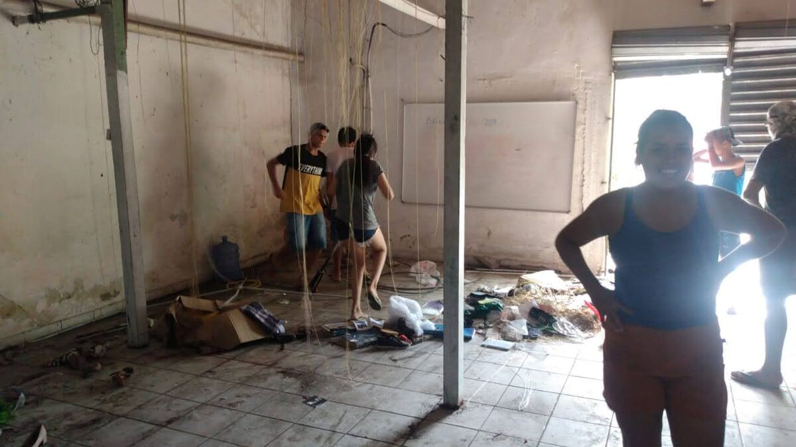
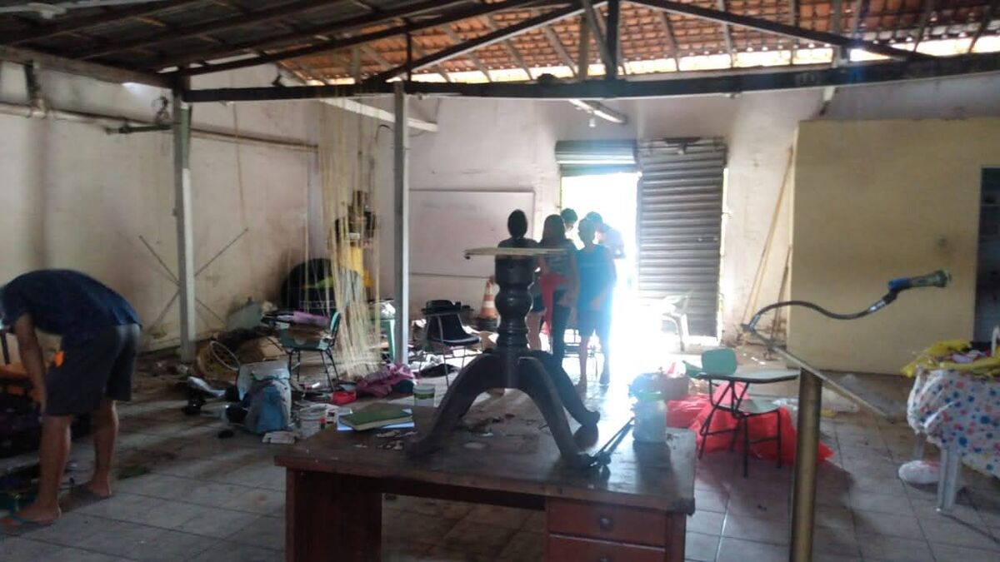
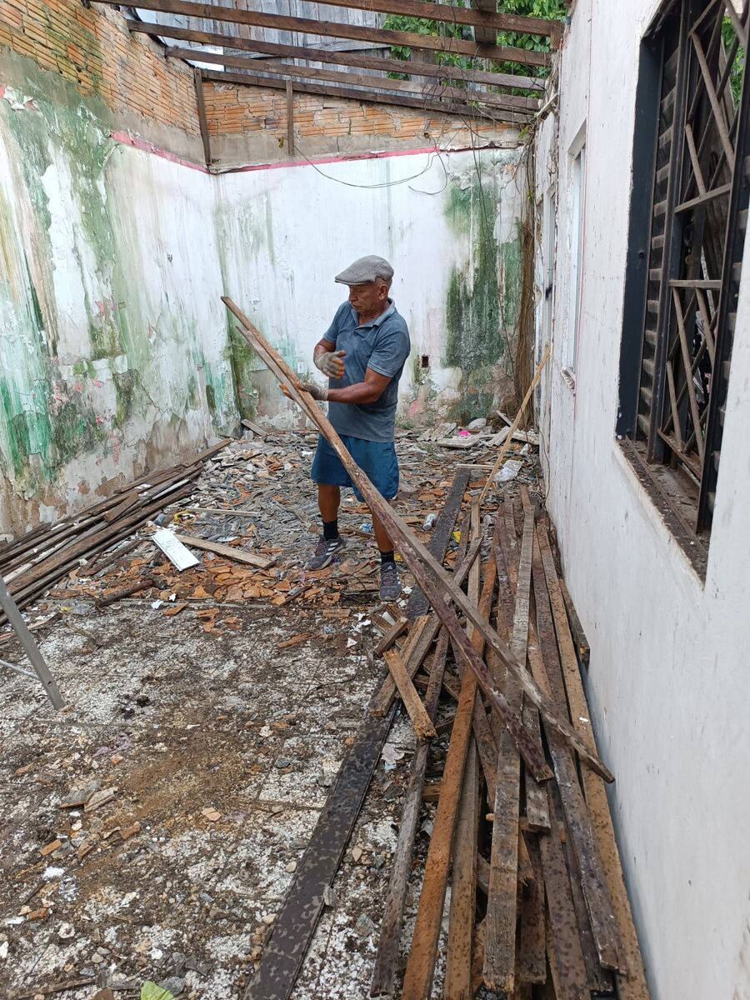
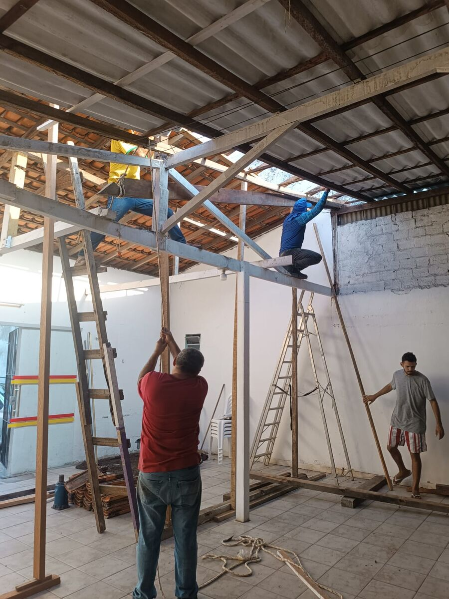
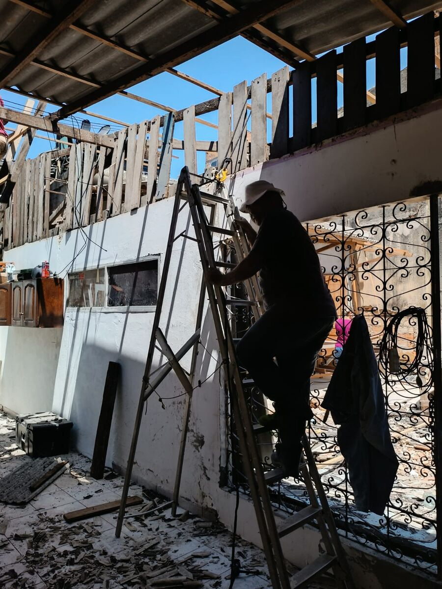
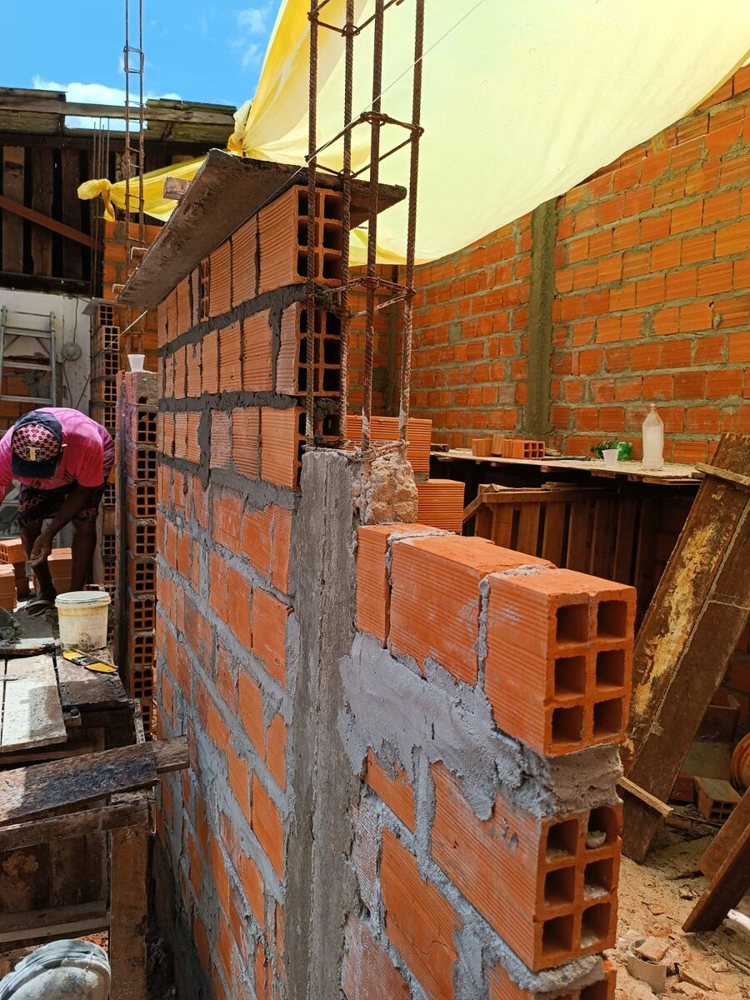
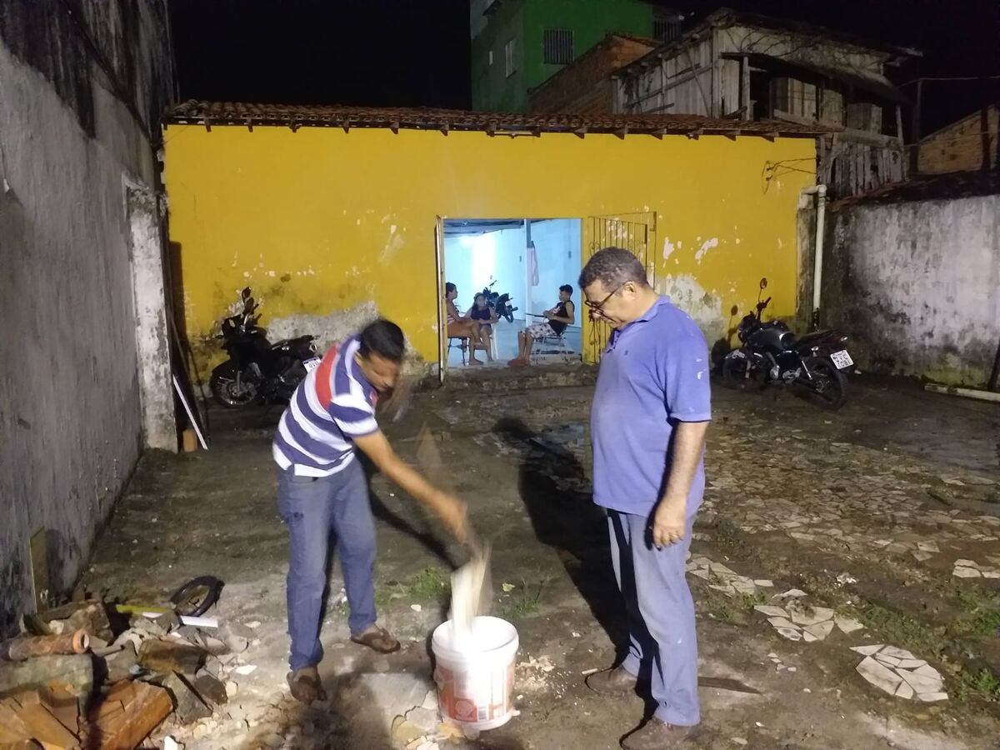
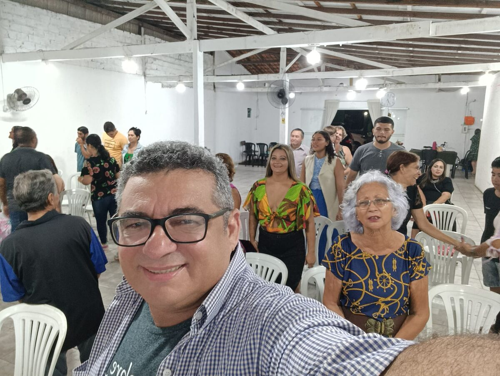
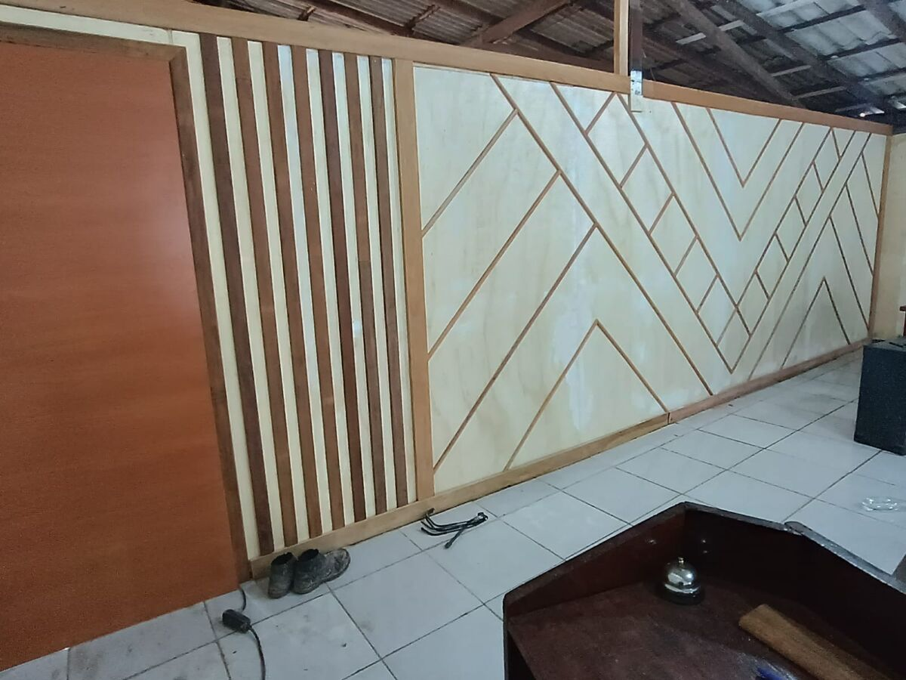
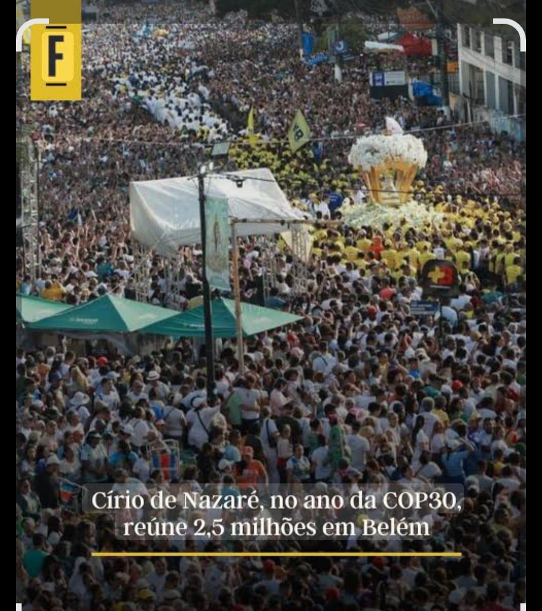
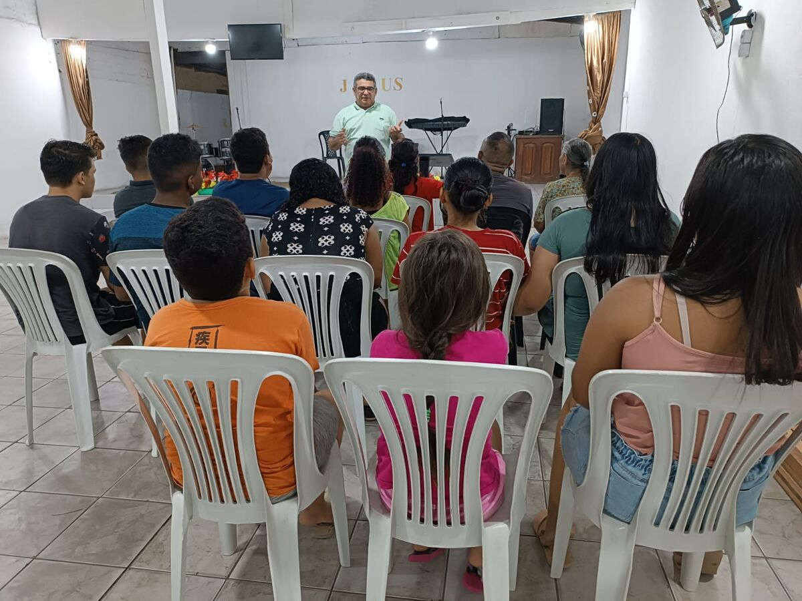
Nossa história
A Igreja Batista Belém está localizada no norte do Brasil, na cidade de Belém, capital do estado do Pará. Essa igreja representa uma história de reavivamento — ela havia sido fechada por vários anos antes de ser resgatada e restaurada.
O que inspirou o relançamento dessa igreja foi a profunda necessidade de compartilhar o Evangelho na região. Belém abriga uma das maiores manifestações de idolatria do Brasil, atraindo mais de dois milhões de pessoas para um único evento de adoração a cada ano. Motivados por isso, viemos para Belém com o objetivo de proclamar o verdadeiro Deus, o autêntico Evangelho e o caminho genuíno para o Senhor. Nosso propósito era reconstruir a igreja abandonada em meio a uma comunidade profundamente carente da presença de Deus.
A igreja foi fundada originalmente em 1999 pelo pastor Carlos Chaves e sua esposa, Linda. Durante os primeiros seis anos, eles desenvolveram um programa de evangelismo focado em construir relacionamentos com a comunidade, o que resultou em numerosas conversões e um crescimento constante.
Em 2005, o pastor Carlos se mudou para outro ministério em São Paulo, no sudeste do Brasil, confiando a liderança a outros pastores. Após enfrentar diversos desafios, a igreja infelizmente fechou suas portas em 2021. Foi então que a Igreja Batista Central de Garça interveio, adotando-a como congregação. Sob sua orientação, o pastor Carlos retornou a Belém para recuperar e restaurar o trabalho — um processo que está em andamento atualmente.
Em 2023, encontramos o prédio em total abandono e nos comprometemos com sua reconstrução e restauração. Os trabalhos começaram no mesmo ano. A estrutura estava deteriorada e imprópria para uso, exigindo intervenções extensas para evitar o colapso total.
As principais melhorias incluíram a construção de banheiros, instalação de forro, construção de calçada, troca e reforço do telhado, adição de uma nova sala, pintura geral e construção de um palco.
Em meio às reformas e construções, também buscamos os remanescentes — aqueles que ficaram sem uma igreja após o fechamento. O esforço de recuperação tinha duas frentes: reconstruir a estrutura física e revitalizar a comunidade espiritual de fiéis.
Ainda há muito a ser feito. Precisamos construir duas salas adicionais: uma para adolescentes, que estão começando a chegar em números crescentes, e outra para atender às necessidades crescentes da igreja. Assim como na história de Neemias, contamos com o apoio daqueles a quem Deus desperta no coração o desejo de colaborar conosco.
O que precisamos
Assim como na história de Neemias, contamos com aqueles a quem Deus desperta no coração o desejo de colaborar. Cada contribuição é um tijolo nesta obra que é de Deus.
Uma sala para os adolescentes, que chegam em número crescente, e outra para suprir as demandas da comunidade em expansão.
Recursos para programas, materiais didáticos e liderança focada na próxima geração de crentes em Belém.
Manter o prédio restaurado em boas condições para que a comunidade tenha um lar espiritual digno e seguro.
Bíblias, instrumentos musicais, equipamento de som e materiais para os cultos e eventos da igreja.
Ações evangelísticas no bairro e na cidade, levando o Evangelho verdadeiro ao meio do sincretismo.
Sustento do pastor residente para que ele se dedique integralmente ao ministério e ao crescimento da comunidade.
Faça parte da obra
Cada real doado é investido diretamente na restauração do prédio, no cuidado com a comunidade e na proclamação do Evangelho em Belém — uma das cidades mais evangelisticamente desafiadoras do Brasil.
"Assim como na história de Neemias, contamos com o apoio daqueles a quem Deus desperta no coração o desejo de colaborar conosco."
— Pastor Carlos Chaves
Sua contribuição — seja pontual ou recorrente — é a diferença entre portas fechadas e uma comunidade viva, ativa, transformando uma cidade carente da presença de Deus.
Escolha um valor ou digite o que desejar. Toda quantia é bem-vinda e bem administrada.
Chave PIX para transferência
Ou pelo botão abaixo para contato direto:
Suas informações são usadas apenas para comunicação com a igreja.
Nenhum dado financeiro é armazenado aqui.
O que já foi feito
Desde 2023, com muita fé, esforço e generosidade, diversas melhorias já foram concluídas. Esta é a prova de que quando nos unimos, o impossível se torna realidade.